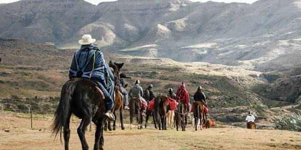

| Attraction | Value |
|---|---|
| Lepaqoa Waterfall | Frozen in winter |
| Lepaqoa Waterfall | steam in summer |
| Mountains | Hiking |
| Mountains | skiing in winter |
| Mountains | skydiving |
| Bokong landscape | nature reserve |
| Attraction | Value |
|---|---|
| Lepaqoa Waterfall | Frozen in winter |
| Lepaqoa Waterfall | steam in summer |
| Mountains | Hiking |
| Mountains | skiing in winter |
| Mountains | skydiving |
| Bokong landscape | nature reserve |

Maletsunyane falls near Semonkong plunges 192 meters into a gorge, Creating a thunder that echoes through the valley. This waterfall is one of Africa’s highest single-drop falls at 192 meters. It attracts visitors for hiking, photography, and abseiling activities. The surrounding environment is pristine and scenic. Community tourism benefits local residents. It supports sustainable tourism practices. The site enhances Lesotho’s eco-tourism appeal. Conservation is essential for its future (UNESCO, 2022).

Sehlabathebe is Lesotho's first national park and part of the Maluti-Drakensberg UNESCO World Heritage site. Its name means" shield of the plateau" because rock formation rise like ancient walls. The park protect rare plants, wildflowers, and rock pool perfect for summer swimming. You'll hike past sandstone arches, overhangs with san rock art, and herds of eland. there are no fences, no cars, and almost no other tourist. you access it by 4X4 or on multi-day pony trek from nearby villages. camping here means you hear your heartbeat. this is a wilderness as should be

The Basotho pony is a small, strong, and sure-footed, bred for the mountains life over centuries, pony trekking is not a tourist show; it is the main transport in the rural areas of Lesotho. Trip range from 2 hours to 10 hours day, sleeping in villages or Mountains huts. Malealea lodge and semonkong offres guided treks to watersfalls, caves and san art sites. you'll cross rivers, climb passes, and be led by guides whose families have done this for generations. No experience is needed because the ponies know the way better than you do.

Sani Pass is a renowned mountain route offering adventure tourism through steep and winding roads. Visitors experience breathtaking views and challenging terrain. The route connects Lesotho and South Africa, promoting cross-border tourism. It attracts 4x4 enthusiasts and adventure seekers. The surrounding scenery enhances its appeal. Local businesses benefit from tourism activities. It remains a key attraction (Government of Lesotho,(2021)

Bokong Nature Reserve is a premier eco-tourism destination in Lesotho offering scenic landscapes and peaceful environments (Page, 2020). Visitors enjoy mountain views and natural beauty. Furthermore, this aspect plays a significant role in enhancing the overall visitor experience within the destination. It also contributes to sustainable tourism development by balancing environmental conservation with economic benefits. Scholars emphasize that such initiatives improve destination competitiveness and long-term viability (UNWTO, 2019). In addition, community involvement ensures that tourism benefits are distributed more equitably among local stakeholders. Therefore, continuous improvement and strategic planning remain essential for maintaining high standards in the tourism sector.

Lesotho’s history is linked to King Moshoeshoe I and the formation of the Basotho nation. Historical sites provide educational tourism opportunities. They reflect resistance, unity, and identity. Preservation supports cultural heritage. Guided tours enhance understanding. Tourism strengthens national pride. History contributes significantly to tourism (UNESCO, 2022).